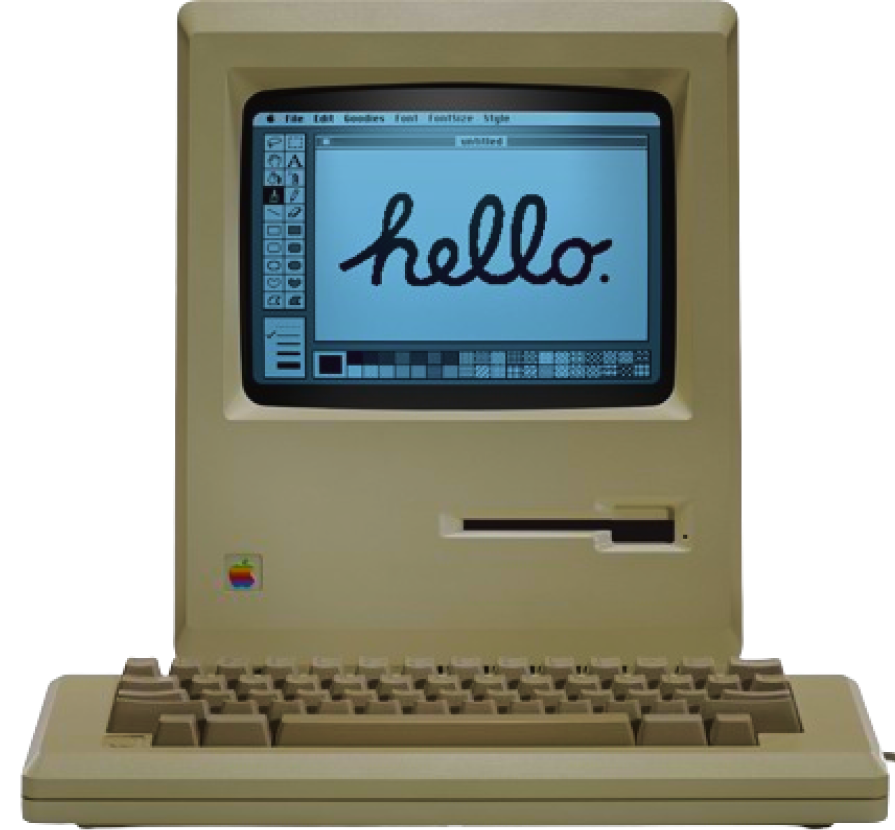

Pioneiro na operação individual, o IBM 610 era compacto o suficiente para caber em um escritório formal, mesmo pesando 360 kg. Controlado por teclado, foi um dos primeiros computadores com essa interface e tinha a capacidade de ajustar automaticamente a vírgula decimal em operações aritméticas.
Considerado um "Terminal inteligente", o Datapoint tinha como objetivo ser um terminal versátil, eficiente e de baixo custo, utilizando uma fita magnética, ao invés de hardware como na maior parte dos computadores da época.
Os empreendedores do setor comercial ainda descobriram que o chamado "terminal programável" tinha capacidades que podiam executar todas as funções de um computador simples. Eles aproveitaram isso usando seus 2200 como um sistema
de computação autônomo.
Kenbak-1 é considerado pelo Computer History Museum como o primeiro computador pessoal do mundo, mesmo havendo opiniões controversas. Apesar de ter vendido apenas cerca de 40 unidades, o Kenbak-1 teve um impacto significativo na história da computação. Foi pioneiro antes da era dos microprocessadores, utilizando circuitos integrados TTL para processamento. Além disso, possuía um preço relativamente baixo para os computadores da época e utilizava linguagem de máquina configurada por alavancas.
SimuladorO Altair é reconhecido como a fagulha que levou à revolução do computador pessoal nos anos seguintes: os barramentos de computador desenhados para o Altair se tornariam um padrão de facto na forma de barramento S-100 e a primeira linguagem de programação para a máquina foi o Altair BASIC, que conduziu à fundação da Microsoft.
SimuladorO Sol-20 foi o primeiro microcomputador totalmente montado com teclado embutido e saída de televisão, o que mais tarde seria conhecido como computador pessoal.
O Sol apareceu na capa da edição de julho de 1976 da Popular Electronics como um "terminal inteligente de alta qualidade". Foi inicialmente oferecido em três versões; a placa-mãe Sol-PC em forma de kit, a Sol-10 sem slots de
expansão e a Sol-20 com cinco slots.
Foi um computador doméstico, considerado um dos primeiros computadores pessoais de sucesso comercial, e teve um papel importante na popularização da computação pessoal durante os anos 70. Possuía um monitor monocromático embutido, memória expansível até 32 KB, portas para outros periféricos e vinha com a linguagem de programação BASIC pré-instalada.
SimuladorComputador pessoal que revolucionou a indústria e influenciou a forma como as pessoas utilizam seus computadores até hoje, o Apple II se destacava pelo seu design colorido com teclado embutido, interpretador para a linguagem BASIC e capacidade de se conectar com outros periféricos. Também se destacava por oferecer suporte para a utilização de disquetes e por possuir uma ampla gama de softwares.
SimuladorO IBM PC, lançado pela IBM em 1981, foi um dos primeiros computadores pessoais a ganhar ampla aceitação e a estabelecer padrões na indústria de informática. Utilizava o processador Intel 8088 e o sistema operacional MS-DOS da Microsoft. Sua introdução definiu o modelo para muitos computadores pessoais subsequentes e contribuiu significativamente para a disseminação dos PCs na década de 1980, dando início à era dos computadores acessíveis para uso doméstico e comercial.
SimuladorLançado em 1983, o Compaq Portable foi um dos primeiros computadores portáteis compatíveis com IBM PC, marcando um avanço significativo na computação pessoal. Possuía uma tela embutida, teclado destacável e uma bateria que permitia operação independente da energia elétrica, tornando-o uma opção popular para profissionais e usuários domésticos.
SimuladorMacintosh 128K é um computador produzido pela Apple Inc. Vinha com 128 kB de memória e rodava o System 1. Tinha tela preta e branca e mouse com um só botão. Ele recebeu uma atualização, "System 1.1" , antes de ser sucedido pelo
System 2.
O Macintosh é um grande marco na história dos computadores pois ele destacou-se como o primeiro a popularizar a interface gráfica, tela incorporada e mouse.
MFoi um dos primeiros computadores portáteis produzidos em massa pela empresa.Seu design era robusto, pesando cerca de 7,3 kg, o que o tornava relativamente pesado e difícil de transportar em comparação com os laptops modernos. Apesar de suas limitações de mobilidade, o Macintosh Portable foi um marco na evolução dos computadores portáteis, demonstrando o interesse crescente por computação móvel e estabelecendo um precedente para futuros laptops da Apple. Além de pesado, o Portable custava cerca de $7000.
O IBM PC AT foi um marco na evolução dos computadores pessoais, apresentando uma arquitetura avançada com processador Intel 80286 e suporte a maior capacidade de memória e velocidade. Essa nova geração de PCs permitiu a execução de aplicativos mais complexos e impulsionou a adoção de computadores para uso empresarial, estabelecendo padrões duradouros na indústria de tecnologia.
SimuladorFoi um dos primeiros laptops baseados no processador Intel 80286, oferecendo desempenho e portabilidade avançados para profissionais em movimento. Com uma tela VGA e capacidade de armazenamento interno, o LTE/286 estabeleceu novos padrões para laptops compactos e poderosos, contribuindo para a crescente demanda por computadores portáteis na década de 1980.
SimuladorA World Wide Web (WWW) foi proposta por Tim Berners-Lee em 1989 como um sistema para compartilhar informações na internet usando hipertexto. Em 1991, a primeira página da web foi criada e a WWW se tornou acessível ao público. A internet, precursora da WWW, começou nos anos 1960 como ARPANET, uma rede experimental de comunicação entre computadores. Isso iniciou uma revolução de como nós nos comunicamos e vivemos.
O Risc PC 600 originalmente vinha equipado com um ARM 610, uma CPU RISC de 32 bits com 4 KB de cache e clock de 30 MHz. Em dois anos, a tecnologia avançou consideravelmente, permitindo a instalação de um DEC StrongARM a 233 MHz,
o que representava cerca de 8 vezes mais velocidade.
Essas máquinas operavam com o sistema operacional RISC OS, conhecido por seu design multitarefa cooperativo em janelas. Um aspecto notável era que o sistema operacional era armazenado em ROM, resultando em tempos de inicialização
relativamente rápidos para a época.
O IBM ThinkPad 701, apelidado de Butterfly devido ao seu teclado deslizante, foi um subportátil lançado pela IBM em março de 1995 e comercializado até o final daquele ano. Este laptop, que custava entre US$ 1.499 e US$ 3.299, destacou-se
como o mais vendido em 1995 e ganhou 27 prêmios de design.
Apesar de seu sucesso, o 701 foi descontinuado devido à evolução dos designs de teclado, que perderam sua singularidade com o aumento do tamanho das telas. Após sua retirada do mercado, houve especulações sobre o desenvolvimento
de um novo notebook com um teclado semelhante ao estilo borboleta do 701.
O Power Macintosh G3, comumente chamado de beige G3s ou platinum G3s, foi uma série de computadores pessoais lançados pela Apple Inc. de novembro de 1997 a janeiro de 1999. Foi o primeiro Macintosh a usar o PowerPC G3 (PPC750).
Foi um computador revolucionário que marcou o retorno da Apple ao mercado de consumo. Com seu design colorido e inovador, o iMac G3 destacou-se pela simplicidade e facilidade de uso. Integrou o monitor e a unidade central em uma única peça, eliminando a necessidade de cabos complexos e ocupando menos espaço na mesa. Além disso, o iMac G3 foi um dos primeiros a oferecer conectividade à Internet sem fio por meio de tecnologias como o AirPort. Com sua estética ousada e desempenho sólido, o iMac G3 ajudou a revitalizar a marca Apple e estabeleceu um novo padrão para design de computadores pessoais.
Desde os anos 2000, os computadores passaram por uma evolução notável. Os processadores tornaram-se mais poderosos e eficientes, com a transição dos 32 bits para os 64 bits e o surgimento de CPUs multi-core. A capacidade e velocidade da memória RAM e do armazenamento (HDDs e SSDs) aumentaram significativamente, permitindo melhor desempenho e armazenamento de dados mais rápido. Houve uma revolução na conectividade, com a popularização de Wi-Fi, USB, Bluetooth e outros padrões de comunicação sem fio.